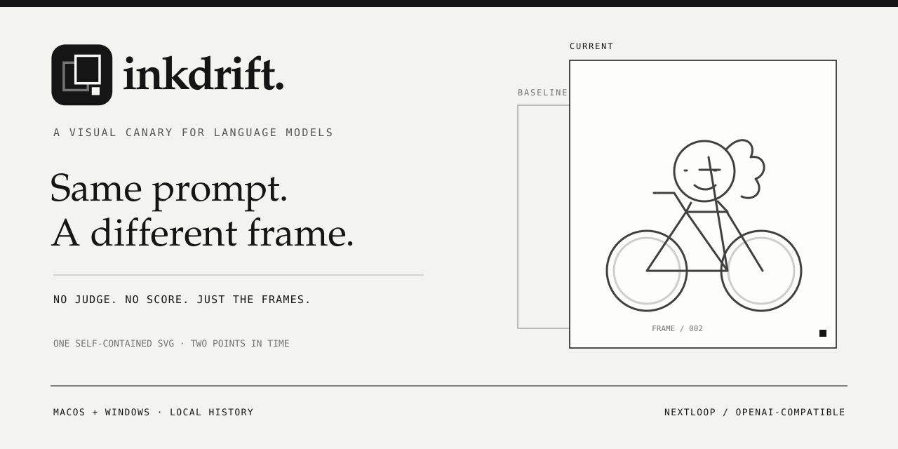

Compare, don't score.
The two-frame symbol carries the core interaction. No IQ meter, no questionable benchmark, no red or green verdict.
A monochrome identity for Inkdrift, built around the product itself: a baseline, a current frame, and a small visual canary. No lightning, no gradients, no decorative noise.

VARIANT: EDITORIAL · WARM PAPER · SERIF WORDMARK · HAIRLINE FRAMES
The two-frame symbol carries the core interaction. No IQ meter, no questionable benchmark, no red or green verdict.
History is a first-class part of the identity: precise timestamps, local records and a consistent editorial rhythm.
Simple line icons support the security story without turning the README into a wall of shields and claims.